Laporan Praktikum Aplikasi Mobile
HTTP Request dan Integrasi API pada ResepKu
Repository GitHub: Praktikum Pekan 8Oleh:
AHMAD RAKA ALKINDI
NIM. 2411533017
Dosen Pengampu:
ARIFAN RAHMAN, M.Kom.
Mata Kuliah:
PRAKTIKUM APLIKASI MOBILE (DIF61145)
Fakultas Teknologi Informasi
Universitas Andalas
Padang
A. Pendahuluan
Praktikum ini melanjutkan aplikasi ResepKu dari Praktikum 7. Data dummy yang ditulis langsung di kode diganti dengan data dari REST API https://dummyjson.com/recipes. Konsep yang dipelajari:
a. Future, async/await
Operasi yang selesai di masa depan (misalnya request jaringan) tanpa membekukan UI.
b. JSON dan fromJson
Respons server berupa teks JSON yang diubah menjadi objek Recipe lewat jsonDecode dan factory Recipe.fromJson.
c. Package http dan RecipeService
Request GET dan POST dipusatkan dalam satu class service, lengkap dengan timeout dan pengecekan status code.
d. FutureBuilder
Menampilkan loading state, error state (tombol coba lagi), dan data, serta pull-to-refresh dengan RefreshIndicator.
B. Tujuan
- Membaca struktur respons JSON dan membuat factory
fromJsonuntuk model Recipe. - Melakukan request GET dengan package
httpdi dalam class service. - Menampilkan data dengan
FutureBuilderlengkap dengan loading state, error state, tombol coba lagi, dan pull-to-refresh. - Mengirim data baru dengan request POST dari sebuah form, lalu menangani hasilnya.
C. Isi & Langkah Kerja
Seluruh screenshot aplikasi memperlihatkan footer identitas (NIM dan nama) dari Modul 6. Screenshot disimpan di folder ../semester5/pekan8/.
LANGKAH 1: MENGENAL API DAN MODEL fromJson (BAGIAN A)
- A.1 Respons
https://dummyjson.com/recipes?limit=2dibuka di browser. Objek terluar berisi keyrecipes(array),total,skip, danlimit. - A.2 Package http dipasang dengan
flutter pub add http. - A.3
recipe.dartdiganti: ditambah fieldinstructionsdan factoryRecipe.fromJson. Rating dibaca sebagainumlalutoDouble(), field opsional diberi nilai bawaan. - A.4 File
data/dummy_recipes.dartbeserta foldernya dihapus.
Tabel Langkah A.1
| Pertanyaan | Jawaban |
|---|---|
Nilai total | 50 |
| Key yang berisi daftar resep | recipes |
Tipe nilai rating resep pertama | double (contoh 4.6) |
| Tiga key yang belum ada di model Modul 7 | instructions, tags, mealType |
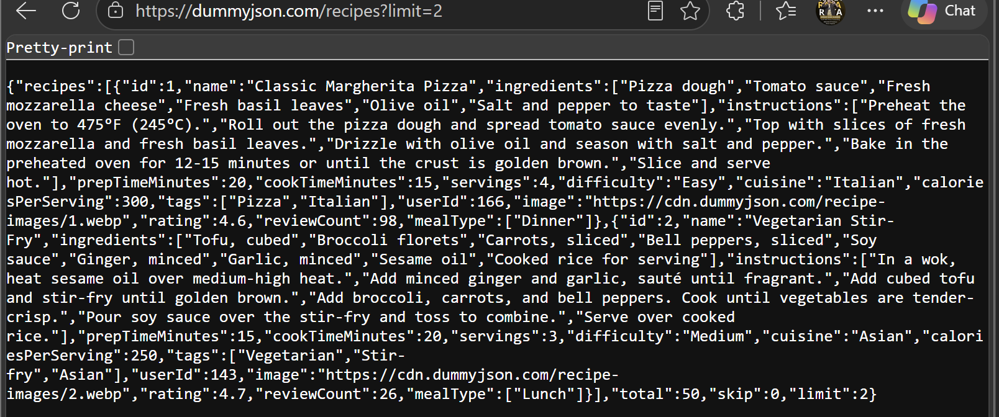
Gambar 1: Respons JSON dummyjson di browser (total 50, key recipes, rating double)LANGKAH 2: RECIPESERVICE DAN FUTUREBUILDER (BAGIAN B)
- B.1 Dibuat
RecipeServicedengan methodfetchRecipes()(GET, timeout 10 detik,_checkStatusuntuk status non-2xx) danRecipeServiceException. - B.2
RecipeServicedidaftarkan dimain.dartmemakaiProviderbiasa; lalu dilakukan hot restart. - B.3 Dibuat widget
ErrorViewberisi pesan dan tombol "Coba lagi". - B.4
HomePagememakaiFutureBuilder; Future dibuat sekali diinitState,_reload()membuat Future baru, dan daftar dibungkusRefreshIndicator. - B.5 Halaman detail menampilkan bagian "Langkah" dari
instructions(versi SliverAppBar:SliverToBoxAdapter+SliverList.builder). - B.6 Error state diuji dengan mode pesawat + hot restart, lalu tombol "Coba lagi" dan pull-to-refresh.
Checkpoint 1: Data dari Server
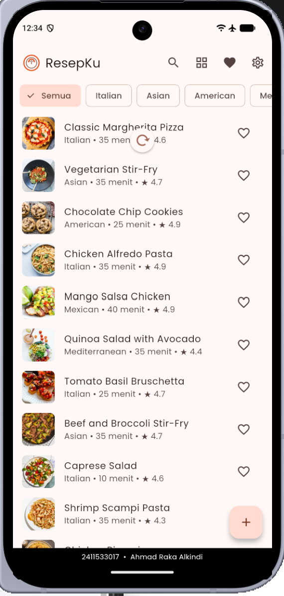
Gambar 2: Home dengan resep dari server (Classic Margherita Pizza, Vegetarian Stir-Fry, dst.)Checkpoint 2: Error State dan Refresh
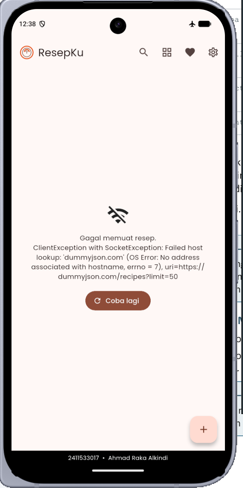
Gambar 3: ErrorView saat mode pesawat aktif, dengan tombol Coba lagiLANGKAH 3: MENGIRIM RESEP BARU / POST (BAGIAN C)
- C.1 Method
addRecipe()ditambahkan diRecipeService:POST /recipes/adddengan headerContent-Type: application/jsondan bodyjsonEncode. - C.2 Dibuat
AddRecipePageberisiFormdengan tigaTextFormField(validator), tombol Simpan yang dinonaktifkan saat_saving, dan pemeriksaanmountedsetelahawait. - C.3 Ditambahkan
FloatingActionButton+ diHomePagedan method_openAddPage()yang menampilkan SnackBar berisi id dari server. - C.4 Diuji: form kosong menampilkan "Wajib diisi"; resep Rendang (Indonesian, 180 menit) berhasil dikirim, tetapi tidak muncul setelah refresh karena dummyjson hanya simulasi.
Checkpoint 3: POST
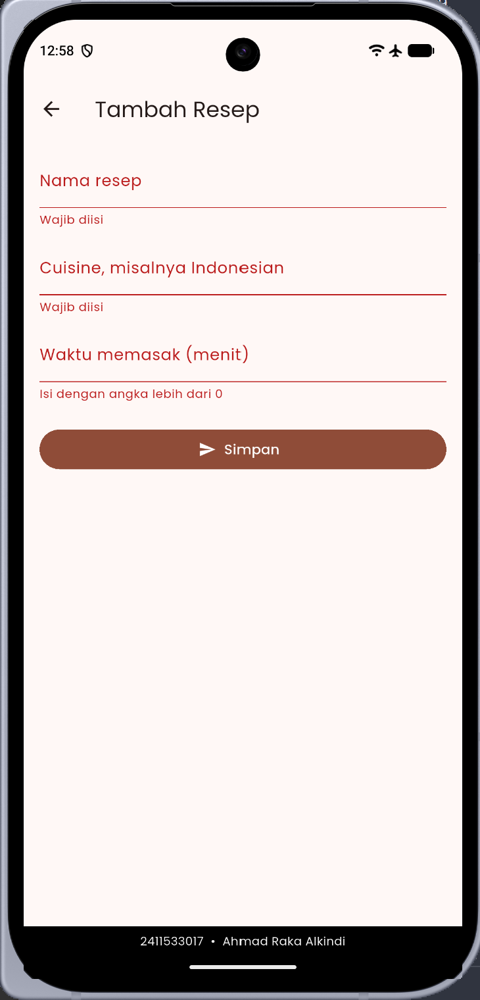
Gambar 5: Form Tambah Resep dengan pesan validasi "Wajib diisi"LANGKAH 4: PENGUJIAN (BAGIAN D)
| No | Skenario | Hasil yang Diharapkan | Sesuai? |
|---|---|---|---|
| 1 | Buka aplikasi | Indikator loading, lalu 50 resep dari server | Sesuai |
| 2 | Tandai dua resep favorit, lalu tarik untuk refresh | Ikon hati kedua resep tetap merah dan badge tetap 2 | Sesuai |
| 3 | Tekan tombol grid, lalu kembali ke list | Tidak ada indikator loading baru | Sesuai |
| 4 | Buka detail salah satu resep | Foto, porsi, bahan, dan langkah memasak tampil | Sesuai |
| 5 | Mode pesawat, lalu hot restart | ErrorView dengan tombol "Coba lagi" | Sesuai |
| 6 | Matikan mode pesawat, tekan "Coba lagi" | Daftar resep tampil kembali | Sesuai |
| 7 | Kirim resep baru melalui tombol + | SnackBar berisi id dari server | Sesuai |
LANGKAH 5: PERTANYAAN ANALISIS
1. Mengapa status favorit tetap benar padahal setiap refresh membuat objek Recipe baru?
Karena FavoriteProvider tidak membandingkan resep berdasarkan identitas objek, melainkan berdasarkan id resep. Objek hasil fromJson yang baru memiliki id yang sama dengan resep sebelumnya, sehingga isFavorite(recipe) tetap menghasilkan true. Jika perbandingan memakai identitas objek, semua favorit akan "hilang" setiap kali data dimuat ulang.
2. Mengapa tombol grid tidak memunculkan loading? Apa jadinya jika future ditulis di build()?
Future dibuat sekali di initState dan disimpan di _recipesFuture. Saat tombol grid ditekan, setState hanya memanggil build ulang, dan FutureBuilder tetap memakai Future yang sama yang sudah selesai, sehingga data langsung tampil. Jika fetchRecipes() ditulis di build(), setiap setState membuat Future baru: request terkirim ulang ke server dan indikator loading muncul lagi setiap tombol ditekan.
3. Dua keuntungan memakai RecipeService dibanding http.get langsung di HomePage
Pertama, pemisahan tanggung jawab: widget hanya mengurus tampilan, sedangkan URL, timeout, pengecekan status, dan parsing JSON ada di satu tempat sehingga perubahan (misalnya base URL) cukup dilakukan sekali dan kode dapat dipakai ulang di banyak halaman (Home, Search, Add). Kedua, kemudahan pengujian: http.Client dapat diganti MockClient sehingga service diuji tanpa internet dan tanpa UI.
4. Mengapa resep hasil POST tidak muncul saat refresh? Bagaimana server sungguhan menampilkannya?
dummyjson hanya menyimulasikan POST: server mengembalikan data beserta id baru, tetapi tidak benar-benar menyimpannya, sehingga GET berikutnya tidak memuat resep tersebut. Pada server sungguhan, data tersimpan di database sehingga muncul pada GET berikutnya. Aplikasi biasanya memuat ulang daftar dari server setelah POST berhasil, atau langsung menambahkan resep yang dikembalikan server ke daftar lokal (state) agar tampil segera.
5. Skenario apa yang dicegah oleh if (!mounted) return;?
Setelah await (request yang bisa memakan beberapa detik), user mungkin sudah menutup halaman form. Tanpa pemeriksaan, kode tetap memanggil Navigator.pop, setState, atau ScaffoldMessenger pada widget yang sudah di-dispose, yang menimbulkan error "setState() called after dispose" atau memakai context yang tidak valid. Pemeriksaan mounted menghentikan eksekusi pada kondisi itu.
LATIHAN 1: PENCARIAN RESEP
Ditambahkan searchRecipes(query) di RecipeService (memakai Uri.replace(queryParameters) agar query ter-encode) dan SearchPage dengan TextField di AppBar. Future disimpan di field nullable dan dibuat ulang di onSubmitted. Pesan awal "Masukkan kata kunci untuk mencari.", hasil kosong, loading, dan error ditangani; RecipeTile dan ErrorView dipakai kembali.
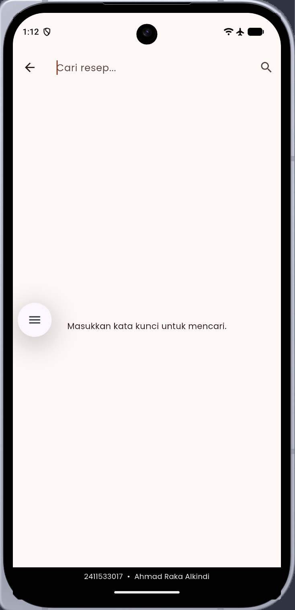
Gambar 6: Halaman pencarian sebelum user mencari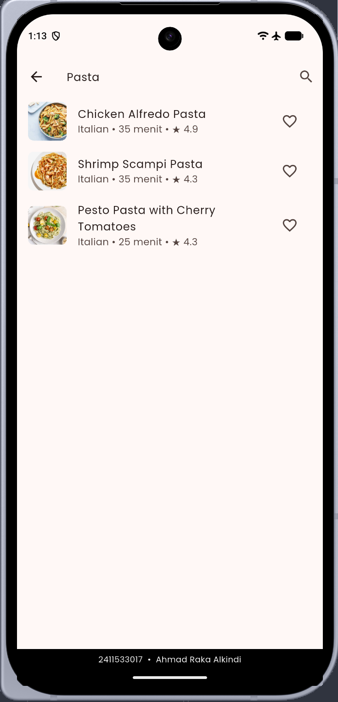
Gambar 7: Hasil pencarian "Pasta" (3 resep)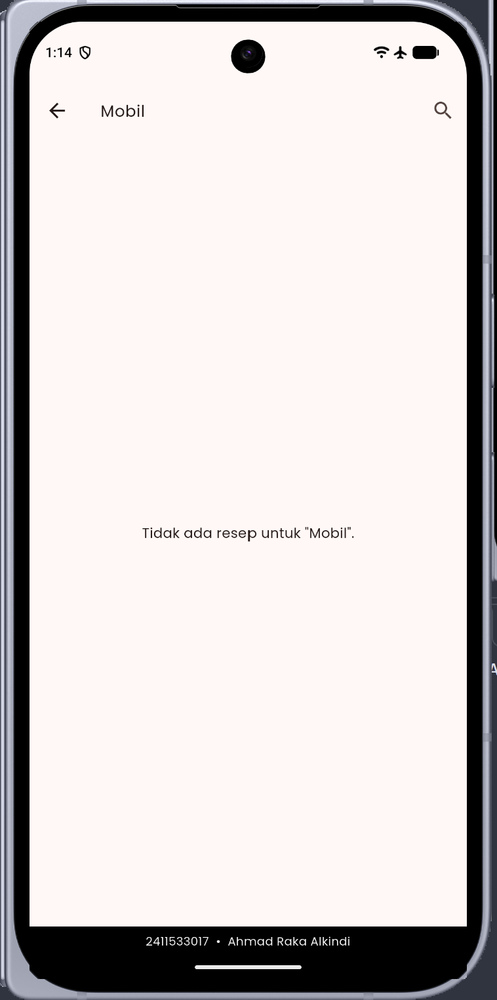
Gambar 8: Hasil kosong: Tidak ada resep untuk "Mobil"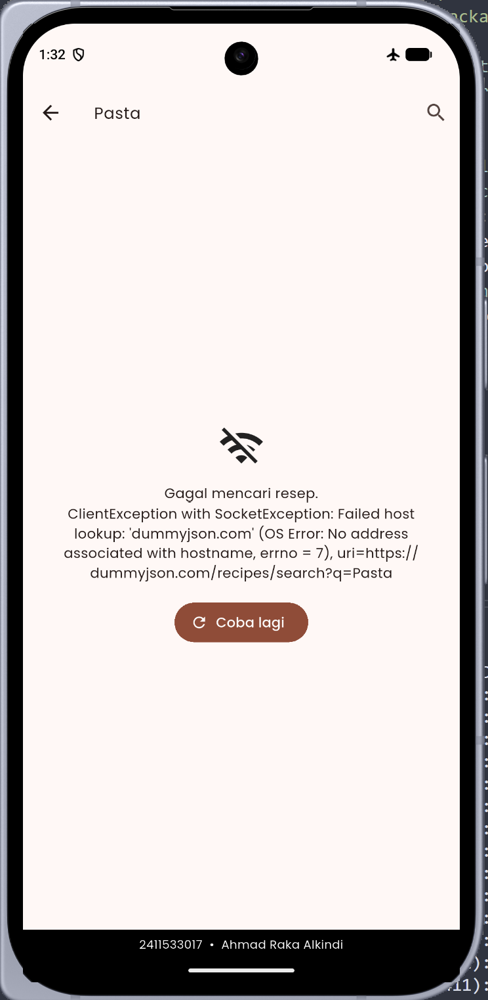
Gambar 9: Error pencarian saat mode pesawat, dengan tombol Coba lagiLATIHAN 2: MENGUBAH DAN MENGHAPUS RESEP
Ditambahkan PopupMenuButton di AppBar detail (di actions SliverAppBar bila memakai versi Latihan 3 Modul 7). "Ubah nama" membuka AlertDialog + TextField lalu PUT /recipes/{id}; "Hapus" membuka dialog konfirmasi lalu DELETE /recipes/{id} dan menutup halaman bila isDeleted: true. Pemeriksaan mounted dilakukan setelah setiap await.
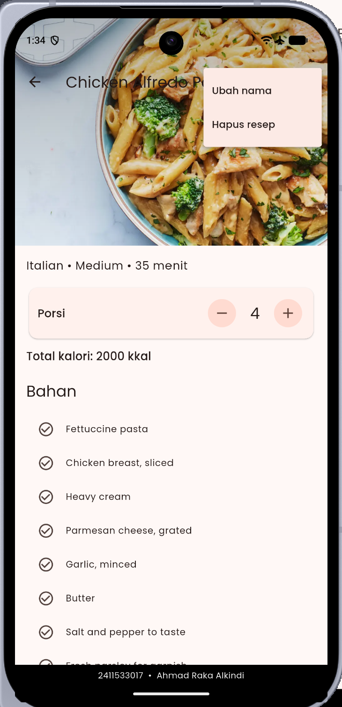
Gambar 10: PopupMenuButton di halaman detail (Ubah nama, Hapus resep)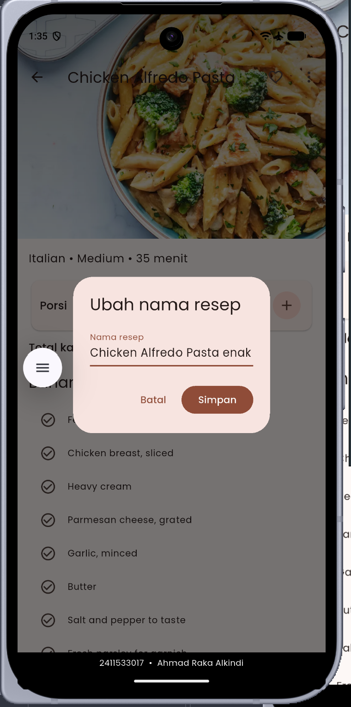
Gambar 11: Dialog ubah nama resep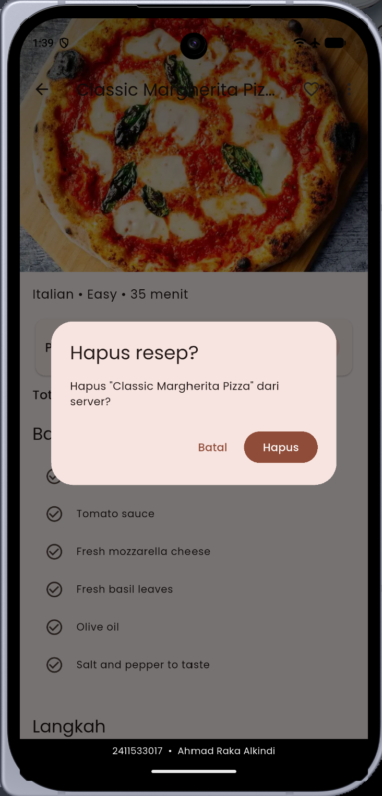
Gambar 12: Dialog konfirmasi hapus resepLATIHAN 3 (BONUS): UNIT TEST TANPA INTERNET
File test/recipe_service_test.dart menguji Recipe.fromJson (rating 5 menjadi 5.0 dan nilai bawaan) serta fetchRecipes dengan MockClient (sukses dan status 404 melempar RecipeServiceException), ditambah pengujian searchRecipes dan addRecipe. Hasilnya 8 test lulus.
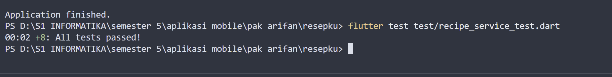
Gambar 13: Outputflutter test: All tests passed (+8)LANGKAH 7: SOURCE CODE
Kode inti yang baru atau berubah. File lain (recipe.dart, main.dart, error_view.dart, dan sisa home_page.dart serta add_recipe_page.dart) sama seperti pada modul dan tersedia lengkap di repository GitHub.
import 'dart:convert';
import 'package:http/http.dart' as http;
import 'package:resepku/models/recipe.dart';
class RecipeService {
RecipeService({http.Client? client}) : _client = client ?? http.Client();
final http.Client _client;
static const _baseUrl = 'https://dummyjson.com';
static const _timeout = Duration(seconds: 10);
Future<List<Recipe>> fetchRecipes({int limit = 50}) async {
final uri = Uri.parse('$_baseUrl/recipes?limit=$limit');
final response = await _client.get(uri).timeout(_timeout);
return _parseList(response);
}
// Latihan 1
Future<List<Recipe>> searchRecipes(String query) async {
final uri = Uri.parse('$_baseUrl/recipes/search')
.replace(queryParameters: {'q': query});
final response = await _client.get(uri).timeout(_timeout);
return _parseList(response);
}
Future<Recipe> addRecipe({
required String name,
required String cuisine,
required int cookTimeMinutes,
}) async {
final response = await _client
.post(
Uri.parse('$_baseUrl/recipes/add'),
headers: {'Content-Type': 'application/json'},
body: jsonEncode({
'name': name,
'cuisine': cuisine,
'cookTimeMinutes': cookTimeMinutes,
}),
)
.timeout(_timeout);
_checkStatus(response);
return Recipe.fromJson(jsonDecode(response.body) as Map<String, dynamic>);
}
// Latihan 2: PUT, mengembalikan nama dari respons server
Future<String> updateRecipe(int id, String name) async {
final response = await _client
.put(
Uri.parse('$_baseUrl/recipes/$id'),
headers: {'Content-Type': 'application/json'},
body: jsonEncode({'name': name}),
)
.timeout(_timeout);
_checkStatus(response);
final body = jsonDecode(response.body) as Map<String, dynamic>;
return body['name'] as String? ?? name;
}
// Latihan 2: DELETE, true jika isDeleted
Future<bool> deleteRecipe(int id) async {
final response = await _client
.delete(Uri.parse('$_baseUrl/recipes/$id'))
.timeout(_timeout);
_checkStatus(response);
final body = jsonDecode(response.body) as Map<String, dynamic>;
return body['isDeleted'] == true;
}
List<Recipe> _parseList(http.Response response) {
_checkStatus(response);
final body = jsonDecode(response.body) as Map<String, dynamic>;
final list = body['recipes'] as List<dynamic>;
return list
.map((item) => Recipe.fromJson(item as Map<String, dynamic>))
.toList();
}
void _checkStatus(http.Response response) {
if (response.statusCode < 200 || response.statusCode >= 300) {
throw RecipeServiceException(
'Server menjawab dengan status ${response.statusCode}');
}
}
void close() => _client.close();
}
class RecipeServiceException implements Exception {
RecipeServiceException(this.message);
final String message;
@override
String toString() => message;
}import 'package:flutter/material.dart';
import 'package:provider/provider.dart';
import 'package:resepku/models/recipe.dart';
import 'package:resepku/services/recipe_service.dart';
import 'package:resepku/widgets/error_view.dart';
import 'package:resepku/widgets/recipe_tile.dart';
class SearchPage extends StatefulWidget {
const SearchPage({super.key});
@override
State<SearchPage> createState() => _SearchPageState();
}
class _SearchPageState extends State<SearchPage> {
final _controller = TextEditingController();
Future<List<Recipe>>? _resultsFuture; // null = belum mencari
String _query = '';
@override
void dispose() {
_controller.dispose();
super.dispose();
}
void _search(String value) {
final query = value.trim();
if (query.isEmpty) return;
// Future baru dibuat di dalam setState, bukan di build()
setState(() {
_query = query;
_resultsFuture = context.read<RecipeService>().searchRecipes(query);
});
}
@override
Widget build(BuildContext context) {
return Scaffold(
appBar: AppBar(
title: TextField(
controller: _controller,
autofocus: true,
textInputAction: TextInputAction.search,
decoration: const InputDecoration(
hintText: 'Cari resep...',
border: InputBorder.none,
),
onSubmitted: _search,
),
actions: [
IconButton(
icon: const Icon(Icons.search),
onPressed: () => _search(_controller.text),
),
],
),
body: _resultsFuture == null
? const Center(child: Text('Masukkan kata kunci untuk mencari.'))
: FutureBuilder<List<Recipe>>(
future: _resultsFuture,
builder: (context, snapshot) {
if (snapshot.connectionState == ConnectionState.waiting) {
return const Center(child: CircularProgressIndicator());
}
if (snapshot.hasError) {
return ErrorView(
message: 'Gagal mencari resep.\n${snapshot.error}',
onRetry: () => _search(_query),
);
}
final recipes = snapshot.data ?? [];
if (recipes.isEmpty) {
return Center(child: Text('Tidak ada resep untuk "$_query".'));
}
return ListView.builder(
itemCount: recipes.length,
itemBuilder: (context, index) =>
RecipeTile(recipe: recipes[index]),
);
},
),
);
}
}// Di dalam _DetailPageState (detail_page.dart)
Future<void> _editName() async {
final service = context.read<RecipeService>();
final controller = TextEditingController(text: widget.recipe.name);
final newName = await showDialog<String>(
context: context,
builder: (dialogContext) => AlertDialog(
title: const Text('Ubah nama resep'),
content: TextField(
controller: controller,
decoration: const InputDecoration(labelText: 'Nama resep'),
),
actions: [
TextButton(
onPressed: () => Navigator.pop(dialogContext),
child: const Text('Batal'),
),
FilledButton(
onPressed: () => Navigator.pop(dialogContext, controller.text.trim()),
child: const Text('Simpan'),
),
],
),
);
controller.dispose();
if (newName == null || newName.isEmpty) return;
try {
final serverName = await service.updateRecipe(widget.recipe.id, newName);
if (!mounted) return;
ScaffoldMessenger.of(context).showSnackBar(
SnackBar(content: Text('Nama dari server: "$serverName"')),
);
} catch (e) {
if (!mounted) return;
ScaffoldMessenger.of(context)
.showSnackBar(SnackBar(content: Text('Gagal mengubah: $e')));
}
}
Future<void> _deleteRecipe() async {
final service = context.read<RecipeService>();
final ok = await showDialog<bool>(
context: context,
builder: (dialogContext) => AlertDialog(
title: const Text('Hapus resep?'),
content: Text('Hapus "${widget.recipe.name}" dari server?'),
actions: [
TextButton(
onPressed: () => Navigator.pop(dialogContext, false),
child: const Text('Batal'),
),
FilledButton(
onPressed: () => Navigator.pop(dialogContext, true),
child: const Text('Hapus'),
),
],
),
);
if (ok != true) return;
try {
final deleted = await service.deleteRecipe(widget.recipe.id);
if (!mounted) return;
if (deleted) {
ScaffoldMessenger.of(context).showSnackBar(
SnackBar(content: Text('"${widget.recipe.name}" dihapus (isDeleted: true)')),
);
Navigator.pop(context);
}
} catch (e) {
if (!mounted) return;
ScaffoldMessenger.of(context)
.showSnackBar(SnackBar(content: Text('Gagal menghapus: $e')));
}
}
// Di actions milik SliverAppBar, setelah tombol favorit:
PopupMenuButton<String>(
onSelected: (value) {
if (value == 'edit') _editName();
if (value == 'delete') _deleteRecipe();
},
itemBuilder: (context) => const [
PopupMenuItem(value: 'edit', child: Text('Ubah nama')),
PopupMenuItem(value: 'delete', child: Text('Hapus resep')),
],
),// home_page.dart (potongan): tombol cari di AppBar dan tombol tambah
actions: [
IconButton(
tooltip: 'Cari resep',
icon: const Icon(Icons.search),
onPressed: () => Navigator.push(
context,
MaterialPageRoute(builder: (context) => const SearchPage()),
),
),
// ... tombol grid, favorit, pengaturan (tetap)
],
floatingActionButton: FloatingActionButton(
tooltip: 'Tambah resep',
onPressed: _openAddPage,
child: const Icon(Icons.add),
),
// add_recipe_page.dart (potongan): tombol Simpan dengan ikon kirim
FilledButton.icon(
onPressed: _saving ? null : _save,
icon: _saving
? const SizedBox(
width: 20,
height: 20,
child: CircularProgressIndicator(strokeWidth: 2),
)
: const Icon(Icons.send),
label: const Text('Simpan'),
),import 'dart:convert';
import 'package:flutter_test/flutter_test.dart';
import 'package:http/http.dart' as http;
import 'package:http/testing.dart';
import 'package:resepku/models/recipe.dart';
import 'package:resepku/services/recipe_service.dart';
void main() {
group('Recipe.fromJson', () {
test('rating int (5) dibaca sebagai 5.0', () {
final r = Recipe.fromJson({'id': 1, 'name': 'Tes', 'rating': 5});
expect(r.rating, 5.0);
expect(r.rating, isA<double>());
});
test('field yang tidak ada diberi nilai bawaan', () {
final r = Recipe.fromJson({'id': 1, 'name': 'Tes'});
expect(r.cuisine, '-');
expect(r.difficulty, '-');
expect(r.servings, 1);
expect(r.image, '');
expect(r.instructions, isEmpty);
});
test('ingredients dan instructions dibaca sebagai List<String>', () {
final r = Recipe.fromJson({
'id': 1,
'name': 'Tes',
'ingredients': ['A', 'B'],
'instructions': ['Langkah 1'],
});
expect(r.ingredients, ['A', 'B']);
expect(r.instructions, ['Langkah 1']);
});
test('totalTimeMinutes = prep + cook', () {
final r = Recipe.fromJson({
'id': 1, 'name': 'Tes',
'prepTimeMinutes': 20, 'cookTimeMinutes': 15,
});
expect(r.totalTimeMinutes, 35);
});
});
group('RecipeService', () {
test('fetchRecipes mengembalikan List<Recipe>', () async {
final client = MockClient((_) async => http.Response(
jsonEncode({'recipes': [{'id': 1, 'name': 'A'}, {'id': 2, 'name': 'B'}]}),
200));
final list = await RecipeService(client: client).fetchRecipes();
expect(list.length, 2);
expect(list.first.name, 'A');
});
test('status 404 melempar RecipeServiceException', () async {
final client = MockClient((_) async => http.Response('', 404));
expect(RecipeService(client: client).fetchRecipes(),
throwsA(isA<RecipeServiceException>()));
});
test('searchRecipes mengirim parameter q', () async {
late Uri requested;
final client = MockClient((request) async {
requested = request.url;
return http.Response(jsonEncode({'recipes': []}), 200);
});
await RecipeService(client: client).searchRecipes('pasta goreng');
expect(requested.path, '/recipes/search');
expect(requested.queryParameters['q'], 'pasta goreng');
});
test('addRecipe mengembalikan Recipe dari respons POST', () async {
final client = MockClient((_) async => http.Response(
jsonEncode({'id': 51, 'name': 'Rendang', 'cuisine': 'Indonesian'}),
201));
final r = await RecipeService(client: client).addRecipe(
name: 'Rendang', cuisine: 'Indonesian', cookTimeMinutes: 180);
expect(r.id, 51);
expect(r.name, 'Rendang');
});
});
}D. Kesimpulan
Dari praktikum ini saya memahami cara mengintegrasikan aplikasi Flutter dengan REST API. Data dummy digantikan data dari dummyjson.com yang diubah menjadi objek lewat fromJson. Seluruh komunikasi server dipusatkan di RecipeService sehingga widget tetap bersih dan mudah diuji. FutureBuilder menangani loading, error (dengan tombol coba lagi), dan data, sedangkan Future dibuat di initState agar tidak terkirim ulang setiap build. Request POST dari form berhasil dikirim dan ditangani, termasuk validasi dan pemeriksaan mounted, dengan catatan dummyjson hanya menyimulasikan penyimpanan. Fitur favorit, list, dan grid dari modul sebelumnya tetap berjalan dengan data dari server.